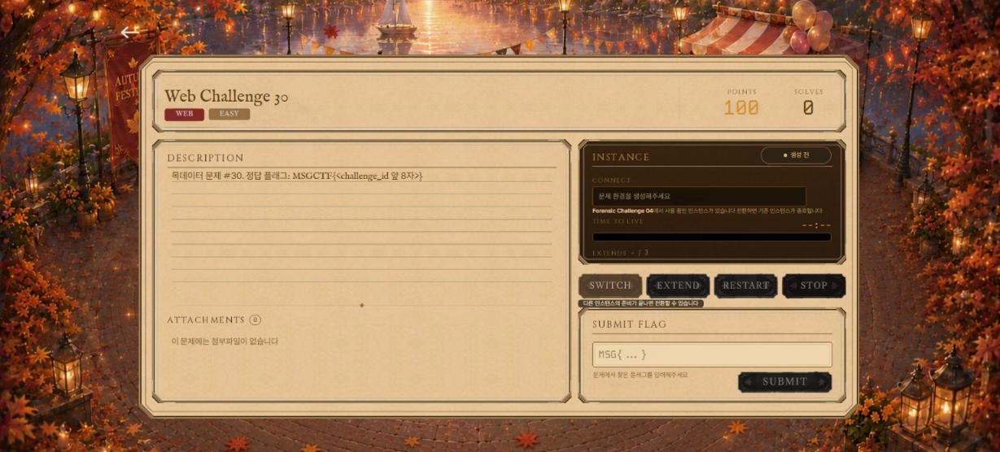
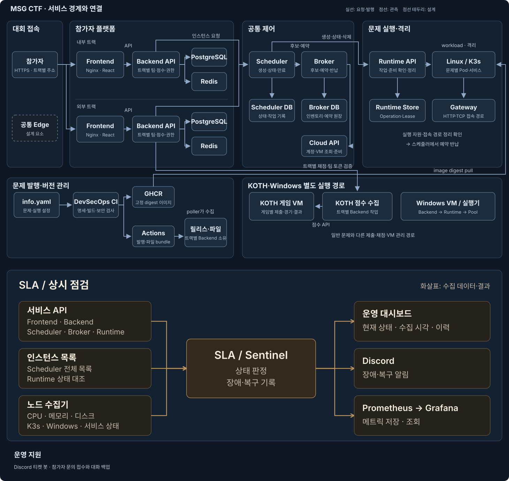

- 클라우드 추가 결제
- 0 원
- 크레딧 적용 후
- 일반 문제
- 30 개
- KOTH
- 6 개
- 참가 환경
- 내부 · 외부
- 계정·팀·점수 분리
플랫폼 화면
주사위를 굴려 이동하고, 도착한 칸에서 문제를 고릅니다

문제 파일 다운로드, 인스턴스 실행, 플래그 제출을 한 화면에서 처리합니다
동아리별 시그니처 문제와 마일리지·QR 결제를 연결했습니다
프론트엔드 저장소의 화면 기록 · 개발 화면 포함
플랫폼 구성
문제 발행
GitHub Actions · GHCR
이미지와 참가자 파일 발행버전 등록
Backend
파일·환경변수·비밀값 연결문제 실행
Scheduler · Broker · Runtime
자원 예약 후 격리 환경에 배포자원 반납
Runtime · Scheduler · Broker
실제 자원을 삭제한 뒤 예약 반납
전체 구성도접기

두 트랙의 데이터 저장소를 분리하고, 공통 제어 서비스와 연결했습니다
공통 Edge와 Active/Standby 자동 승격은 설계·추가 검증 범위입니다
참여자와 저장소
저장소를 누르면 참여자와 맡은 일을 볼 수 있습니다
01Frontend참가자·관리자 화면React · Vite
- tortoiese
문제·보드·관리자 UI, API 연결, 타이머와 화면 디자인
- yes0r
보드·KOTH·순위·마이페이지, 동아리 부스와 3D 화면 구성
- Giheon-Jeon
프론트 CI, Nginx API 프록시와 의존성 보안 검사
- woalseee
프론트 실행 환경과 개발 VM 자동 배포
- goldsimchoi
TCP·TLS·SNI 접속 안내와 관리자 이미지 준비 화면
- dnehdx
팀 정보·분야별 순위 표시와 CSP 적용
- jiwonnii
주사위 연속 사용과 충전 규칙 안내
- jongcoding
운영 QA와 연동 보완, 재시도 복구·다운로드·관리자 상품 결제
02Backend인증·보드·문제·점수·마일리지Django · PostgreSQL
- gimgyumin0207
문제·인스턴스 API, 참가자 파일, 릴리스 관리와 관리자 배포 기능
- samdi70
인증·팀 관리, 마이페이지, 마일리지·QR 결제와 릴리스 감사 기록
- jiwonnii
보드 규칙·보상, KOTH API·순위·문제별 팀 토큰
- dnehdx
점수·리더보드 조회, 라인 독점, 조회 성능과 계정별 로그인 제한
- goldsimchoi
Gateway 접속 정보, 이미지 준비 후 전환, Windows 실행 연동
- woalseee
공통 CI 연결과 백엔드 VM 자동 배포
- jongcoding
서비스 간 연동·운영 QA, 주사위 멱등성, 응답 유실·재시작 복구
03Instance Scheduler생성·초기화·만료·정리Kotlin · Spring Boot
- tember8003
스케줄러 기본 흐름, 상태 전환·정리 재시도·전체 조회·Windows 배정 API
- goldsimchoi
이미지 준비 상태 우선 배치와 예약 복구 연결
- jongcoding
실제 서비스 연동, 예약 반납 복구·기동 CPU·요청 ID 멱등성
04Resource Broker클라우드 인벤토리·자원 예약Python · FastAPI
- gonas0919
멀티 클라우드 인벤토리, 후보·예약 API, 관리 콘솔과 노드 준비
- jongcoding
전용 VM·할당량 연동, 인벤토리 오류 수정과 기동 CPU 예약 축소
05RuntimeK3s 배포·격리·비밀값 주입Go · Kubernetes
- goldsimchoi
Runtime API·작업 워커·K3s 배포·격리, Gateway와 Windows 실행 경로
- jongcoding
운영 연동·장애 QA, 기동·삭제 대기 개선과 KOTH 저장·복구 도구
- gonas0919
Windows 실행기 mTLS 설정 연동
- dnehdx
RE:QR 문제 이미지 실행 정책 수정
06Challenge CI문제 검사·이미지·파일 발행GitHub Actions · GHCR
- wlsdnd2367
공통 문제 CI, 명세·보안 검사·SBOM·발행 bundle과 노드 이미지 준비 연결
- jongcoding
실행 환경변수·비밀값 참조와 Crypto·Rev TCP 프로필 연동
- goldsimchoi
GCP 런타임 HTTPS 배포 시험 경로
07Platform CI/CD플랫폼 빌드·자동 배포·롤백GitHub Actions · Docker
- woalseee
공통 플랫폼 CI와 개발 VM 배포, 배포 파일·스토리지 관리
- Giheon-Jeon
프론트 검사에 맞춘 Semgrep 규칙 수정
- jongcoding
배포 전환·롤백, 프론트 제한 SSH 배포와 보안 키·백업 연동
08SLA / Sentinel서비스·노드·인스턴스 감시C# · .NET
- minsoo0506
SLA 계약·.NET 기본 구조, health check worker와 Prometheus metrics
- jongcoding
실제 서버·전체 인스턴스 감시, 운영 대시보드·AWS 배포·노드 수집 연결
09Mock API운영 감시 개발·장애 모사Python · Django
- minsoo0506
Django 기본 구조, Sentinel용 모사 API와 장애 시나리오·검사 설정
10Challenges문제 출제·제공 파일·실행 설정30 Challenges · 6 KOTH
문제 저장소는 접근 권한이 필요합니다
- goldsimchoi
Grand Tour Duel·OSINT 문제 제작과 게임 실행·채점 보완
- jongcoding
플랫폼 배포·환경변수·파일 연결, 원본 풀이 QA와 KOTH 운영 연동
- wlsdnd2367
문제 저장소 CI 호출, 발행·참가자 파일·노드 사전 준비 계약
- gonas0919
Afterimage / MIDNIGHT EXAM 문제 제작과 수정
- cksk00
TR-88·Jenga 문제 제작과 실행·채점 보완
- Ranunculus2165
Reused Seal·Phantom Lattice·The Quiet Second 제작·수정
- YeonHo0718
로그아웃 시켜줘!!·Pixel Smuggler 제작과 수정
- s3tzun4
Hidden Order 제작과 난이도·배포 구성 수정
- yebbis
Snack Thief·Is This Job Legit? 제작
- banda59
TinyVM·msgdriver 제작과 Windows 실행 준비
- Z3r0c0k3
The Past Has an Address·RE:QR 제작과 수정
- random6-xyz
Random6·ezpz 제작과 비의도 풀이 보완
- meeeeing
Nerves SEAL 제작과 암호·서버 구성 수정
- veomeow
CASHOUT·Infinite Pack 제작과 수정
- seolwon05
Ghost File 제작
- sea-2025
Price Tag 제작, 바이너리·제공 파일·풀이 보완
- guswjddl4313
Split-Brain Oracle 제작과 수정
- Hayk6c1
Card Battle Arena 제작과 경기 규칙·검수 보완
- yes0r
The Last Record 제작과 난이도 수정
- yeon365
Notebook 제작과 문제 구조·검수 보완
- xo0102
Dependency Hell 제작, 빌드·동시 요청·채점 복구 보완
- chaeun-11
Open House 제작과 풀이·문제 수정
- zkfla
Evidence 포렌식 문제 제작
- nomadY24
Daily Point 난이도·이미지 보안 보완
- stw0218
Rework 제작과 수정
- lucylucy1006-netizen
Leftovers 포렌식 문제 제작
- tls456
Grade Tampering 플래그 발급 조건 수정
- cooku222
The Past Has an Address 난이도 보완
- hhi3xn
Trace OSINT 문제 제작
- Hyeo0n
Swanopoly 제작과 검수 보완
- hhieon
문제 저장소 커밋 참여
- Whaql123
TR-88 문제 초기 소스 등록
플랫폼 참여자 전체 보기 14
플랫폼 연동·운영·QA, 장애 재현과 복구, 성능 개선, SLA·배포 연결
문제·인스턴스 API, 발행본·제공 파일·배포 버전 관리
인증·팀·관리자 API, 마일리지·QR 결제
보드 규칙·보상과 KOTH API·채점·문제별 토큰
점수·조회 성능, 로그인 제한과 프론트 보안 정책
참가자·관리자 화면, 문제·보드 UI와 API 연결
보드·KOTH·순위·부스 화면과 3D 구성
스케줄러 생성·초기화·만료·정리와 상태 이력
리소스 브로커, 클라우드 인벤토리·예약·관리 콘솔
Go 런타임·K3s 격리·Gateway·Windows 실행 연결
문제 CI·이미지 검사·SBOM·발행과 노드 사전 준비
플랫폼 공통 CI와 프론트·백엔드 VM 자동 배포
프론트 CI·Nginx 프록시·Semgrep 검사 연결
SLA 초기 구조·health worker·Prometheus와 장애 모사 API
2026. 11. 09까지의 병합 PR·커밋 기준